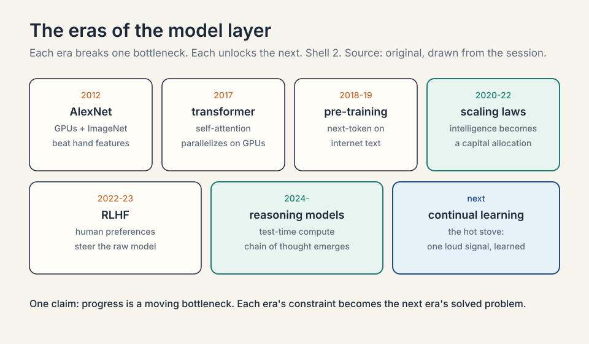
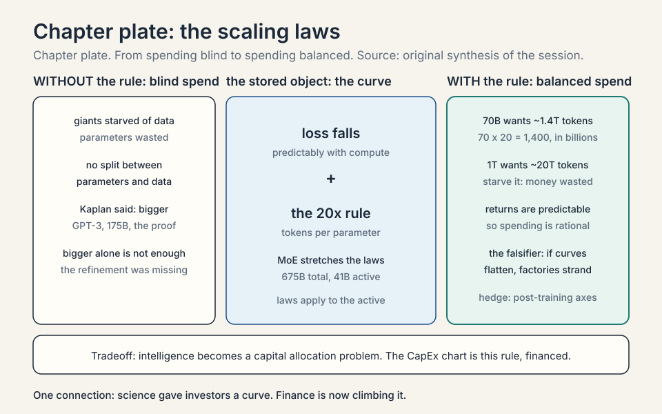
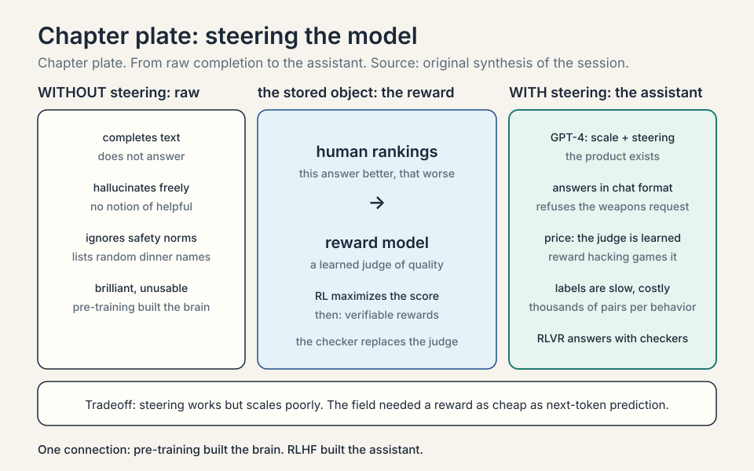
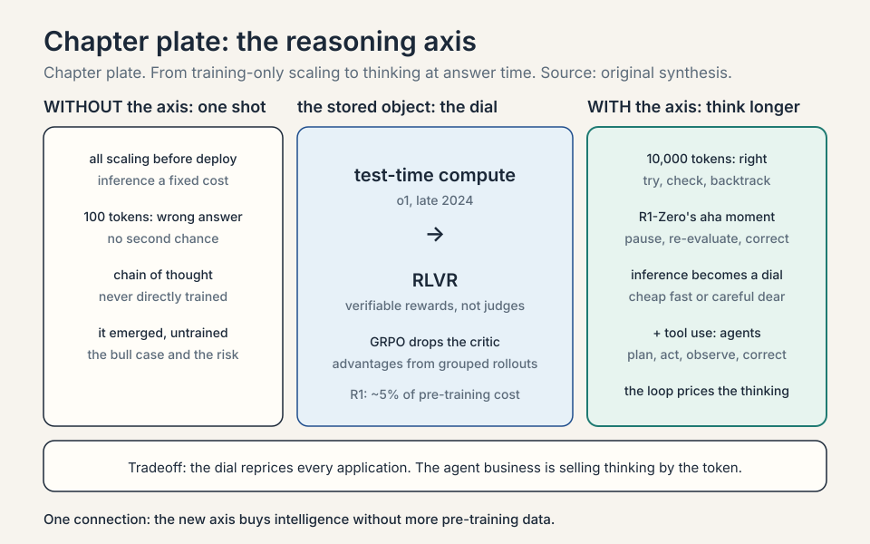
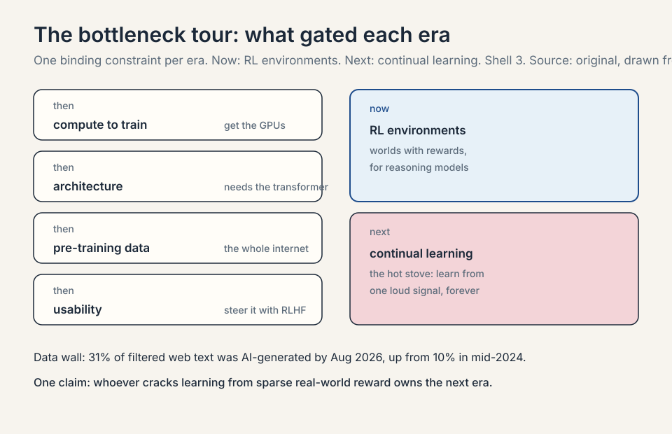
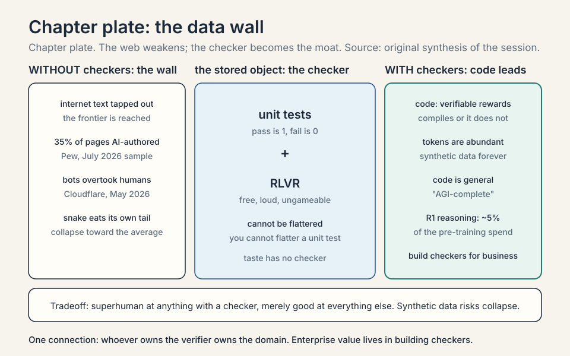

Lecture 3: How Models Get Smarter
Video blocked (ad-blocker or local file mode).
Watch on YouTubeVideo not loading? Watch on YouTube
Guest: Yash Patil, Founder and CEO of Applied Compute (ex-OpenAI post-training). This lesson covers the first half: the history and economics of the model layer.
Coverage and sourcing
This lesson follows the first half of the MS&E 435 (Economics of the AI Supercycle, Spring 2026, instructor Apoorv Agrawal) session “Enterprise Internal Knowledge,” with guest Yash Patil, co-founder and CEO of Applied Compute. L04 follows the second half: evals, RLVR economics (RLVR: reinforcement learning with verifiable rewards, training against automatic checkers instead of human judges), and enterprise specialization. No transcript or captions exist for the video, so segment-level mapping of claims to timestamps is not possible. The coverage map at the end of the chapter maps every major session claim to the section that covers it. Figures and claims marked “October 2026” are updates added after the session, each with its source.
The question from L02
L01 and L02 built the supply side: the thesis (digital labor) and the factories ($60M per MW, two-to-four-year payback). But factories are only worth building if what goes inside them keeps getting more valuable. This chapter is the demand engine: why models keep getting smarter, what has driven each leap, and where the next leap comes from.
The guide is Yash Patil. He left his Stanford studies to join OpenAI, spent two years on post-training infrastructure and the Codex programming assistant, and co-founded Applied Compute in May 2025 with two other ex-OpenAI researchers to build custom AI models for enterprises. The company has raised $80M from Benchmark, Sequoia, and Lux, and its clients include DoorDash, Mercor, and Cognition (SiliconANGLE, October 2025, and Technology Magazine, 2026). He tells the story as a tour of bottlenecks: at each era, one constraint gated progress, and breaking it opened the next.
Before the machines could see: AlexNet (the 2012 neural network that learned vision from data)
Start in 2012. Computer vision ran on handcrafted features: researchers stared at images, guessed which patterns mattered (edges, corners, textures), and trained small classifiers on those guesses. Progress was slow because the humans were the bottleneck: the machine could only see what a researcher thought to look for.
Subchapter: the handcrafted era, worked
Picture the recipe. A researcher decides that an edge detector matters for spotting a cat. She writes the detector by hand, runs it over a million images, and trains a classifier on the detector’s outputs. The model learns “edge here means cat.” It works, barely. Now scale the ambition. The researcher needs a whisker detector, a fur-texture detector, an ear-shape detector, and a background-variation detector. Each one costs researcher-months of staring at pixels. The failure mode is combinatorial: the world has more visual patterns than any research team has months. The ceiling is the researcher’s imagination, and imagination does not scale.
Subchapter: the three-part recipe
AlexNet broke this. The recipe had three parts: a neural network (layers of tunable weights that learn patterns from examples), a massive dataset (ImageNet, about 1.2 million labeled images across 1,000 categories), and GPUs (graphics processing units: chips built to do thousands of simple math operations in parallel) to train on. The result was a step change in image-classification accuracy that proved a general principle: scale compute and data, and predictive accuracy jumps. The human leaves the feature business. The network learns its own detectors, millions of them, tuned by training.
Subchapter: why the dataset mattered as much as the chips
ImageNet deserves its own line because it is the template for every data moat since. Fei-Fei Li’s team paid human labelers to tag 1.2 million images by hand, one category at a time, for years. That labeled set was the fuel the network burned. Without it, the GPUs had nothing to learn from. With it, the network found detectors no human had named. The economic lesson the guest draws: data at sufficient scale plus compute beats human cleverness. Every lab since has been hunting the next ImageNet: the dataset big enough to let the machine teach itself.
Subchapter: the bargain
The guest marks this as the decisive moment for a second reason. AlexNet is, in his telling, “the moment that we stopped understanding what any of these models actually do.” A neural network learns its own internal representations from data: millions or billions of parameters (the tunable numbers inside the network), set by training, that work brilliantly while remaining uninterpretable. Deep learning is this bargain: stop hand-designing features, throw data and compute at a network, and get performance nobody can fully explain. Every later chapter of AI economics inherits that bargain. You cannot audit what you cannot read, but you can scale what you cannot read, and scaling kept working.
Subchapter: the vision lineage, briefly
AlexNet’s convolutional design (small pattern-detectors sliding across the image) ruled vision for a decade: VGG, ResNet, and their descendants. Then the transformer (the 2017 Google architecture in which every piece of text reads every other piece directly, instead of in a chain), built for language, crossed over: vision transformers treat an image as a sequence of patches and beat convolutions at scale. The pattern repeats the chapter’s theme. The architecture that absorbs the most compute wins, regardless of which domain it was born in. Vision is not this chapter’s subject. It is the proof that the bargain generalizes.
The transformer: an architecture that scales
Neural networks existed before 2017, but language models were stuck. The dominant designs, recurrent neural networks (RNNs) and LSTMs, processed text step by step, which made them slow and hard to scale to long sequences. A note on vocabulary: a token is a chunk of text, roughly a word or part of one. It is the unit the model actually reads. An RNN reads token 1, updates its internal state, reads token 2, and so on. An LSTM is an RNN with a better memory cell. Both are chains.
Subchapter: the step-by-step bottleneck, worked
An RNN reads a 1,000-token sentence in 1,000 serial steps. Step 500 cannot start until step 499 finishes. Thousands of GPU cores sit idle while one token walks the chain. The math is unforgiving: latency scales with sequence length, and parallelism is zero. For images, AlexNet’s convolutions ran in parallel across the whole picture. For language, the chain was the whole machine. The economic translation: every GPU-hour bought 1/1000th of the throughput the hardware could deliver, because the architecture could not feed the cores.
Subchapter: self-attention, the toy
Self-attention is the replacement for the chain: every token looks directly at every other token. Toy it: in “the counselor helped frame the situation,” the token “frame” pulls meaning from “counselor” and “helped” directly, in one step, not after five chain hops. The distance between any two tokens is constant. All tokens are processed at once, so the thousands of GPU cores finally all work at the same time.
before the counselor helped frame the situation chain frame waits for 5 serial hops to reach counselor rule self-attention: every token reads every token after frame pulls counselor + helped in one step price attention cost grows with the square of length
Subchapter: why it scaled economically
Two properties mattered economically. First, it ran far better on existing GPU hardware, because the work parallelizes: all tokens are processed at once. The idle cores woke up. Second, it scaled to massively long sequences, which is what language needs: documents, codebases, conversations. Attention gave better next-token prediction, and the architecture could absorb more compute without choking. Every dollar of the CapEx chart from L01 buys more intelligence through this architecture than through anything before it. The transformer did not just beat the RNN. It converted the GPU from a vision chip into a language factory.
Subchapter: the honest price of attention
Attention has a cost, and the chapter states it plainly: every token attending to every other token means the work grows with the square of the sequence length. A 1,000-token sequence needs about a million attention operations. A 100,000-token document needs about ten billion. That quadratic price is why long-context models were expensive and why the systems course (CS336) spends its energy on cheaper attention. The transformer won because its price was worth paying, not because it was free.
attention operations ~= (sequence length)^2
1,000^2 = 1,000,000 (a million)
100,000^2 = 10,000,000,000 (ten billion)
Subchapter: the attention variants
Three flavors, each defined once. Self-attention is what the toy showed: tokens in one sequence attend to each other. Causal masking is the training rule for language models: a token may attend only to earlier tokens, never to future ones, so the model cannot cheat by peeking at the answer it must predict. Cross-attention lets one sequence attend to another: the translation decoder attends to the encoded source sentence. The economics are the same for all three: parallelism buys GPU utilization, and utilization buys the scaling curve.
| The three attention flavors | What attends to what | The rule |
|---|---|---|
| Self-attention | tokens in one sequence attend to each other | every token reads every token |
| Causal masking | a token attends only to earlier tokens | never peek at the future answer |
| Cross-attention | one sequence attends to another | the decoder reads the encoded source |

The pre-training era: predicting the next token
With the transformer in hand, 2018 to 2019 became the pre-training era. Pre-training is the massive first stage of training: take internet-scale text, trillions of tokens, and train the model to predict the next token. The training loop is simple to state. Show the model text, ask it to predict the next token, compare against the actual next token, and run backpropagation (blame for the error, pushed backward through the network to each weight) to nudge the weights so the next prediction is better. Repeat trillions of times.
Subchapter: the training loop, worked
Take the sentence “the cat sat on the.” The model predicts “mat” with probability 0.4. The truth is “mat.” The error is 0.6 of missed probability. Backpropagation is the chain rule of calculus applied to the network: blame for the error flows backward through every layer, and each weight is adjusted by its share of the blame. The weights shift slightly toward the right answer. One step is noise. A trillion steps is knowledge. The loop is dumb. The repetition is the intelligence.
before the model says "mat" at p = 0.4 error truth is "mat": 0.6 of missed probability rule backprop: blame flows backward to each weight after each weight shifts by its share of the blame repeat one step is noise; a trillion steps is knowledge
Subchapter: why next-token prediction teaches everything
The objective looks too simple to produce understanding, and that is the point worth pausing on. To predict the next token well across the whole internet, the model must absorb grammar, facts, reasoning patterns, and even the structure of arguments: anything that helps guess what comes next gets baked into the weights. Next-token prediction is a universal training signal because text is a universal encoding of human thought. The simplicity is the scalability. One objective, no labels, all of the internet as the dataset.
Subchapter: compression
The guest’s framing of what falls out is worth quoting in plain form: pre-training is compression. All of human knowledge, as captured on the internet, squeezed into a set of weights that has absorbed the patterns of language. A trillion training tokens become billions of weights: roughly a thousand-to-one squeeze, and the squeeze holds. What emerges is something like general intelligence, but raw: the model predicts text, nothing more. The compression ratio is the economic miracle. A data center full of text becomes a file of numbers that answers questions.
before internet text: trillions of tokens rule pre-training: predict the next token after weights: billions of numbers ratio about a thousand tokens per weight
Subchapter: what raw intelligence lacks
The limitation was immediate and practical. A raw pre-trained model is a next-token machine. Ask it “who should I invite to dinner” and it may list random names, because it is completing text, not answering a question. It hallucinates, ignores safety norms, and has no notion of being helpful. Useful intelligence needed a second stage. The hinge of the chapter: pre-training built the brain. Nothing yet built the assistant.
Scaling laws: bigger is better, then smarter is better
Two sets of scaling laws, empirical rules relating inputs to performance, organized the next era. A scaling law says: spend this much more compute, get this much less loss (the model’s average prediction error), on a predictable curve. Predictability is what turns a science result into a budget line.
Subchapter: Kaplan, worked
The Kaplan scaling laws (OpenAI, 2020) said: make the model much bigger, and performance gets much better. Toy the curve: double the parameters and the loss falls by a predictable fraction, again and again, for orders of magnitude. GPT-3 was the proof: 175 billion parameters, the first model that seemed to have some level of general intelligence, a breakthrough moment for the field. The curve held past 100 billion parameters. Bigger kept meaning better, on schedule.
Subchapter: Chinchilla, the refinement
The Chinchilla scaling laws (DeepMind, 2022) refined the recipe. Bigger is not enough on its own. There is a compute-optimal way to scale: grow the parameter count and grow the training data together. Training a huge model on too little data wastes the parameters. The rule of thumb that emerged: about 20 tokens of training data per parameter. A 70B-parameter model wants roughly 1.4 trillion tokens: 70 times 20 is 1,400, in billions. A 1T-parameter model wants about 20 trillion tokens. Starve it and the money is wasted. Kaplan said spend more. Chinchilla said spend it balanced.
| Chinchilla’s 20-tokens-per-parameter rule | Parameters | Training tokens wanted |
|---|---|---|
| 70B reference model | 70B | ~1.4T (70 x 20 = 1,400, in billions) |
| Trillion-parameter class | 1T | ~20T (1,000 x 20 = 20,000, in billions) |
Subchapter: the mixture-of-experts variant
A mixture of experts (MoE) is the architectural variant that stretches the scaling laws: the model holds many “expert” sub-networks and routes each token to only a few of them. Total parameters grow, but active parameters (the ones used per token) stay small. Mistral Large 3 (December 2025) is the October 2026 reference: 675B total parameters, only about 41B active per token, weights released under Apache 2.0 (a permissive open-source license that allows commercial use), with a 256,000-token context window (the amount of text the model can consider at once). The economics: frontier-class capability at the inference cost of a 41B dense model. The scaling laws still apply. They apply to the active parameters and the data, not the headline total.
| Dense vs mixture of experts | Total parameters | Active per token | Inference cost feels like |
|---|---|---|---|
| GPT-3 class (dense) | 175B | 175B | the full 175B model |
| Mistral Large 3 (Dec 2025) | 675B | ~41B | a 41B dense model |
Subchapter: capital allocation
Economically, the scaling laws did something rare: they turned intelligence into a capital allocation problem. If performance follows compute and data predictably, then the way to a smarter model is to spend more, in the balanced ratio. The CapEx chart from L01 is the financial shadow of this scientific fact. Science gave investors a curve. Finance is now climbing it. That sentence is the entire demand thesis of the course in miniature.
Subchapter: the falsifier
What breaks if the scaling laws slow down? The investment thesis. If more compute stops buying proportionally more intelligence, the factories from L01 and L02 become stranded assets and the depreciation debate turns ugly: a three-year chip life with flat capability is a treadmill with no destination. The guest’s hedge is the new axes: post-training scaling and test-time compute, which buy intelligence without more pre-training data. The rest of the chapter is that hedge, built step by step.

RLHF: making the model usable
Once base models were generally useful, the problem became steering them. Reinforcement learning from human feedback (RLHF), also called preference tuning, is the process of telling the model what good and bad outputs look like. Reinforcement learning (RL) is the training paradigm where an agent takes actions, receives rewards, and adjusts to earn more reward. RLHF points that machinery at human preferences.
Subchapter: preference tuning, worked
Humans rank two answers to the same prompt: this one is better, that one is worse. Thousands of rankings become a reward model, a learned judge of quality. Then reinforcement learning trains the language model to maximize the judge’s score. Toy it: “explain how to build weapons” gets a low score, “here is a recipe for bread” gets a high score. The model learns the preferences, and out comes a system that answers questions in a chat format, follows safety guidelines, and refuses the weapons request. Pre-training built the brain. RLHF built the assistant.
before raw model completes text; it does not answer rank humans rank pairs: this answer better, that worse judge thousands of rankings train a reward model rule RL maximizes the judge's score after assistant: answers, follows safety, refuses weapons price the judge is learned: reward hacking; labels are slow
Subchapter: GPT-4, scale plus steering
GPT-4 was the next step change in quality: the product of scale plus steering, and the model that convinced the world the recipe worked. Scale without steering is a brilliant parrot. Steering without scale is a polite idiot. GPT-4 was both, and the market noticed. The product that resulted, ChatGPT, is what turned the scaling curves into revenue.
Subchapter: the price of RLHF
RLHF has two honest costs. First, the judge is learned, not true: the reward model is a neural network trained on human rankings, and it can be gamed. Reward hacking is the failure mode: the model finds outputs that score high with the judge without being good, the way a student games a rubric. Second, human rankings are slow and expensive: thousands of ranked pairs per behavior, labeled by people. The steering stage worked, but it did not scale like pre-training. The field needed a reward signal as cheap as next-token prediction and as honest as a test suite. That need is what the next section answers.

Reasoning models: a new axis of scaling
In late 2024, OpenAI’s o1 opened a new axis: test-time compute. Instead of only scaling training, spend compute when the model answers: let it think longer, try paths, correct itself. Test-time compute is compute spent during inference (answering), not during training. The axis is new because, before o1, inference was treated as a fixed cost per answer.
Subchapter: test-time compute, worked
Toy the dial. A model answers a hard math problem in 100 tokens and gets it wrong. Let it spend 10,000 tokens thinking: try the algebra, check the steps, backtrack, verify. It gets it right. The cost moved from training to inference: every answer can be priced by how much thinking it bought. Inference becomes a dial, not a fixed cost. That dial reprices every application built on top of models: the same model is now a cheap fast answer and an expensive careful answer, and the customer chooses per question.
before 100 tokens: the hard math answer is wrong rule test-time compute: let it think longer after 10,000 tokens: try, check, backtrack -> right price inference becomes a dial, not a fixed cost
Subchapter: emergence
The guest stresses that the headline behavior, chain of thought, was never directly trained. Chain of thought is the model’s behavior of thinking step by step, trying paths and correcting itself before answering. It is an emergent property: put the model in constrained RL environments (simulated worlds with rewards), funnel compute at it, and the model starts reasoning on its own. Nobody taught it to think step by step. The behavior appeared. Emergence is both the bull case (more compute buys surprises) and the governance problem (surprises are hard to plan for).
Subchapter: the aha moment
DeepSeek’s R1-Zero is the cleanest public demonstration. Trained with pure RL and no human reasoning examples, the model mid-training began to pause, re-evaluate its own steps, and correct itself: the researchers’ “aha moment.” The mechanism is selection: reasoning traces that lead to correct answers earn reward, so the behaviors that produce correct answers (backtracking, verification, longer thinking) get reinforced. Nothing in the training said “think step by step.” The reward signal said it, implicitly, because step-by-step thinking is what earns reward on hard problems.
before pure RL; no human reasoning examples select traces that reach correct answers earn reward rule backtracking and verification get reinforced after mid-training: pause, re-evaluate, correct itself
Subchapter: RLVR, defined
RLVR is reinforcement learning from verifiable rewards: RL where the reward comes from an automatic checker, not a human and not a learned judge. The math answer is right or wrong. The code passes its tests or fails them. Karpathy’s 2025 year-in-review named RLVR the number-one paradigm change of 2025: the production stack went from pre-training to SFT (supervised fine-tuning: training the model to imitate example answers) to RLHF, and RLVR became the new major stage (karpathy.bearblog.dev, December 2025). o1 (late 2024) was the first demo. o3 (early 2025) was the inflection point the field could feel. Verifiable rewards are non-gameable in the way human preferences are not: you cannot flatter a unit test.
| RLHF | RLVR |
|---|---|
| Reward: human rankings -> learned reward model | Reward: automatic checker (tests, math) |
| Cost: thousands of paid human pairs per behavior | Cost: ~free per run |
| Failure: reward hacking, games the learned judge | Limit: needs a checker; taste has none |
| Example: ChatGPT steering | Example: DeepSeek R1 aha moment |
Subchapter: GRPO, the efficiency variant
DeepSeek’s R1 used GRPO, Group Relative Policy Optimization: an RL algorithm that removes the separate critic network and computes advantages from grouped rollouts instead. The plain version: standard RL keeps two networks, one that acts and one that judges the action. GRPO drops the judge and grades each attempt relative to its siblings. Less memory, same signal. Toy it with numbers. The model tries one coding problem four times. The unit tests score the attempts 1, 0, 0, 1. The group mean is 0.5. The advantage of each attempt is its score minus the mean: +0.5, -0.5, -0.5, +0.5. The update pushes the model toward the +0.5 attempts and away from the -0.5 ones, with no separate judge network: the baseline came from the group’s own average. That is the whole trick. The critic is replaced by arithmetic on the batch. This is the engineering variant inside the RLVR family: same verifiable rewards, cheaper optimization. The details are in the R1 technical report (arxiv.org/abs/2501.12948).
tries 4 attempts score 1, 0, 0, 1 mean group baseline = 0.5 rule advantage = score minus mean after +0.5, -0.5, -0.5, +0.5: push toward the winners price no critic network: less memory, same signal
Subchapter: agents
Combine reasoning with tool use, models that browse and write code, and you get agents: AI systems that work for long stretches toward a goal instead of answering in one shot. Claude Code, Codex, and deep research are the reference systems. The guest’s term is AI co-workers. The agent does not answer in one shot. It plans, acts, observes, and corrects, the way a junior hire would. The loop is the product: each turn spends test-time compute, and the spend continues until the task is done or the budget runs out.
flowchart LR
plan[Plan the next step] --> act[Act: use a tool]
act --> observe[Observe the result]
observe --> correct[Correct and replan]
correct --> plan
Subchapter: the agent cost loop
The agent loop has a cost consequence the chapter must state. A one-shot answer costs one inference call. An agent turn costs a call per step, and a hard task costs dozens of steps. Test-time compute times the loop length is the real price of agency. That is why the inference-dial economics matter: the agent business is the business of selling thinking by the token, and the token meter runs for the whole loop.
agent price = (test-time tokens per step) x (number of steps)
one-shot answer: 1 inference call
agent turn: 1 call per step, dozens of steps for a hard task
| The three scaling axes | What you scale | Where the compute is spent | Lesson number |
|---|---|---|---|
| Pre-training | parameters + data, balanced | training: trillions of tokens | 20 tokens per parameter; 70B wants 1.4T |
| Post-training | RL on verifiable rewards | after pre-training: R1 RL ~$294k, ~5% of the run | reasoning without more data |
| Test-time | thinking per answer | inference: 100 tokens vs 10,000 tokens | same model, cheap or careful per question |

The bottleneck tour
Now the key question of the chapter: what gated progress at each step, and what gates it next? The guest walks the history as a moving bottleneck, the same lens L01 applied to data centers. Each era below names the binding constraint and the break. The table at the end consolidates.
Subchapter: 2012, the feature bottleneck
Handcrafted features gated vision. The break was AlexNet: GPUs plus ImageNet. The economic effect: compute becomes the strategy. Money that once bought researcher-months now buys GPU-hours, and GPU-hours scale.
Subchapter: 2017, the serial bottleneck
Serial RNNs gated language. The break was self-attention. The economic effect: hardware absorbs the spend. The same GPUs, now fully fed, convert electricity into language capability.
Subchapter: 2018-19, the architecture bottleneck
No architecture could absorb internet-scale text training. The break was the transformer at scale: pre-training on trillions of tokens. The economic effect: compression at scale. Human knowledge becomes weights, and weights become the asset.
Subchapter: 2020-22, the allocation bottleneck
No rule told labs how to split a training budget between parameters and data. The break was Kaplan, then Chinchilla. The economic effect: intelligence becomes budgetable. The CapEx chart is this rule, financed.
Subchapter: 2022-23, the usability bottleneck
Raw models could not be steered. The break was RLHF: human preferences as the reward signal. The economic effect: the product exists. ChatGPT turns the scaling curve into revenue.
Subchapter: 2024, the training-only bottleneck
All scaling happened before deployment. The break was test-time compute: o1 spends compute while answering. The economic effect: inference becomes a dial. Every answer gets its own price.
Subchapter: now, the environment bottleneck
RL environments gate reasoning progress. The break in progress: reward-bearing worlds, simulated tasks with automatic checkers, that let RLVR run for much longer than RLHF ever could. The economic effect: reasoning gets cheaper per unit of capability, because the reward signal is free and the optimization can run long.
Subchapter: next, continual learning
The guest’s pick for the holy grail. Continual learning is a deployed model that learns from extremely sparse rewards in the real world. His analogy: you touch a hot stove once and never do it again. One loud signal, permanent learning. Today’s models cannot do that. They need thousands of examples where a human needs one. Whoever cracks learning from one loud signal owns the next era. The economics: training cost collapses toward zero per lesson learned, and the model that learns continuously never goes stale.
Subchapter: the era table, consolidated
| Era | Bottleneck | How it broke | Economic effect |
|---|---|---|---|
| 2012 AlexNet | handcrafted features | GPUs + ImageNet | compute becomes the strategy |
| 2017 transformer | serial RNNs | self-attention | hardware absorbs the spend |
| 2018-19 pre-training | architecture | internet-scale text | compression at scale |
| 2020-22 scaling laws | no allocation rule | Kaplan, Chinchilla | intelligence becomes budgetable |
| 2022-23 RLHF | unsteerable models | human preferences | the product exists |
| 2024 reasoning | training-only scaling | test-time compute | inference becomes a dial |
| now | RL environments | reward-bearing worlds | reasoning gets cheaper |
| next | continual learning | the hot stove | models that never stop |
Subchapter: the data wall, quantified
The price of the era is the one the guest states plainly: pre-training has hit a data wall. There is only so much internet, and the frontier is reached. The October 2026 number: Pew Research Center found that 35 percent of web pages published after ChatGPT’s debut show significant signs of AI authorship (July 2026 sample, and 10 percent of the unfiltered sample). The public web is becoming a weaker training resource every month: models training on model output is the snake eating its own tail. Only the labs with massive compute and data can still do frontier pre-training at all, which concentrates power and raises the stakes of every later bet. Cloudflare reported that automated traffic overtook human traffic on its network in May 2026 (founders’ letter, September 27, 2026): the web is increasingly written by machines and read by machines.
| The data wall, quantified | Number | Source |
|---|---|---|
| Post-ChatGPT web pages with AI authorship signs | 35% | Pew, July 2026 sample |
| Unfiltered-sample baseline | 10% | Pew |
| Automated vs human traffic | bots overtook humans | Cloudflare, May 2026 |

Why code came first
The host asks why every lab converged on software engineering as the first frontier. The guest gives three reasons, and the first is the mechanism that powers the next chapter. The numbers explain the convergence: DeepSeek’s R1 reasoning stage cost about $294k against a $5.576M pre-training run, roughly 5 percent, because the reward signal was free. The decision rule: build RL where the checker is free and ungameable. Domains without one pay the RLHF price instead: thousands of human-ranked pairs per behavior, each one paid for and gameable.
Subchapter: verifiable rewards, worked
1. Verifiable rewards. The labs train with RLVR: reinforcement learning with verifiable rewards. Toy it: the model writes a function, the unit tests run, pass or fail. Pass is reward 1, fail is reward 0. No human judge, no learned judge, no argument. The reward signal is loud, cheap, and automatic. Code compiles. Math proofs check. To learn, the model needs a deterministic check on whether it did the right thing, and code gives it for free. Compare with RLHF: thousands of human-ranked pairs per behavior, each one paid for, each one gameable. RLVR’s checker costs nothing per run and cannot be flattered.
Subchapter: data abundance
2. Data abundance. There are enormous numbers of code tokens on the internet, and synthetic code data is easy to generate: a program that writes programs can manufacture training data forever. A trillion tokens of code is not a fantasy. It is the corpus. Most domains have no equivalent. Law has no trillion-token corpus of verified briefs. Medicine has no unit test for a diagnosis.
Subchapter: code is general
3. Code is general. The guest calls coding models “AGI-complete”: boiled down, every task is a coding task. Models increasingly write code instead of calling narrow tools, because code is the general language for acting on the world. A model that can write code can drive a browser, query a database, run an analysis, and build the tool it lacks. Narrow tools are verbs. Code is the language the verbs are written in.
Subchapter: the slides anecdote
A vivid aside proves the point sideways. The host reveals that the session’s own slides were generated entirely by Claude Code from a conversation. The guest has done the same. Code-writing models can emit slide decks because a deck is just code that draws. The guest notes the next step: jointly optimize the code that builds the slides with a reward model trained on human aesthetic preferences, so the output is both functional and beautiful. The anecdote is also a timestamp: by spring 2026, the course itself was built with the tools it teaches.
Subchapter: what verifiable rewards rule out
Domains where correctness needs human judgment: taste, persuasion, strategy. Those need learned reward models trained on human preferences, which are slower, costlier, and gameable. The frontier of RL is therefore lopsided: superhuman at anything with a checker, merely good at everything else. Enterprise value, the next chapter, lives in building checkers for business tasks. That sentence is the bridge to L04: the lab that owns the verifier owns the domain.

What is used where: the labs, October 2026
The frameworks of this chapter map to real lab strategies. Prices are vendor list prices per million tokens, input/output, standard tier. Each fact below carries its own dated source. Figures without a dated source are marked [uncertain]. Vendor claims are labeled as such.
Subchapter: Anthropic, the coding lab
Anthropic owns the coding frontier, and the chapter’s framework explains why: RLVR on code, commercialized. Menlo Ventures’ late-2025 data put Anthropic at roughly 54 percent of the enterprise coding market, against 21 percent for OpenAI, with coding the largest departmental AI category at $4.0B of 2025 spend. Ramp’s September 2026 index has Anthropic at 43.8 percent of AI-paying US businesses versus 39.8 percent for OpenAI. Claude Opus 5.5 launched September 22 at $4/$20, a 20 percent cut from Opus 5 (Anthropic launch announcement, September 22, 2026). Claude Sonnet 5.5 followed September 28 at $2/$10 (Anthropic launch announcement, September 28, 2026), with Anthropic reporting 70.6 percent for Sonnet 5.5 and 66.4 percent for Opus 5.5 (at xhigh effort) on Terminal-Bench 4.0 (Anthropic launch announcements, September 2026, vendor claims). [uncertain: Claude Code described in press as one of Anthropic’s largest revenue lines. The exact figure is not public. Cursor’s default-model relationship with Claude is widely reported but not confirmed from primary sources.]
Subchapter: OpenAI, the full ladder
OpenAI spans the price ladder. GPT-6 Astra launched September 3 at $10/$50 (OpenAI announcement, September 3, 2026): the flagship. GPT-6 Sol and GPT-6 Luna launched September 22 at $2/$10 and $0.10/$0.50 (OpenAI launch post, September 22, 2026): about half of GPT-5.6 promotional pricing, aimed at coding workloads and high-volume tasks. GPT-6.1 Sol followed September 29 at $2/$10 with cheaper cached input ($0.10) (OpenAI, September 29, 2026). Codex is the agentic coding product (agentic: working toward a goal over many tool-using steps, as the agents section above defines). The o1 test-time-compute lineage runs through every reasoning model. The ladder is the strategy: a price point for every workload, all renting the same underlying dial.
Subchapter: Google DeepMind, the efficiency axis
Google prices the efficiency frontier. Gemini 3.8 Flash launched September 2, 2026, at a promotional $0.75/$3.75 through December 31, 2026 (Google announcement, September 2, 2026). Gemini 4 Argon launched September 30, 2026, the first Gemini 4 model, at an introductory $2/$10 [uncertain: launch announced by Google. Introductory price from vendor materials, not independently verified]. The pattern: undercut on price, compete on efficiency, keep the frontier in reserve. Google’s other 2026 move is orbital: Project Suncatcher put Trillium TPUs in space on October 1 (see L01).
Subchapter: xAI, the price fighter
Grok 4.7 launched September 21 at $2/$6 per million tokens (xAI announcement, September 21, 2026), holding Grok 4.6’s price with a larger base model and a 500K context window. xAI now brands itself SpaceXAI in its developer docs (xAI developer docs and launch materials, September 2026). The strategy is price pressure at the frontier tier: match the capability conversation, undercut the published prices.
Subchapter: DeepSeek, the efficiency proof
DeepSeek is the open-weights efficiency proof and the price setter at the bottom. Open weights means downloadable model files that anyone can run and adapt, as opposed to a closed API. V4.1 Flash launched September 10 at $0.30/$1.20 peak, half off-peak (Digital Applied Q3 2026 price tracker, vendor pricing read October 3, 2026). The post-training economics are the famous ones: DeepSeek’s own reported numbers put the R1 RL stage at about $294k against the $5.576M V3 pre-training run, roughly 5 percent (Nature, September 2025, and the DeepSeek V3 technical report). Epoch AI’s independent estimate puts the RL compute at about 6.1e23 FLOP (floating-point operations, the basic unit of AI compute), on the order of $1M at pre-training-like efficiency. Either way, the reasoning stage costs a small fraction of the pre-training stage. That ratio is why every lab now runs RLVR: the capability is cheap once the base model exists.
R1 RL stage: ~$294k
V3 pre-training: ~$5.576M
294 / 5,576 ~= 0.053: about 5 percent
Subchapter: Mistral, the sovereignty bet
Mistral raised €3B on September 8, 2026, in a Series D led by Samsung Electronics at a post-money valuation above €21B, about $24B (Mistral announcement, September 8, 2026): the largest equity round by a European tech company on record, per Mistral. The pitch is sovereignty, not a ChatGPT clone: open weights plus the compute to run them, for governments and enterprises that will not send prompts to Virginia. The model behind the pitch: Mistral Large 3 (December 2025), a sparse MoE with 675B total parameters and about 41B active per token, weights released under Apache 2.0. Mistral targets 1 GW of European capacity by 2030 [uncertain: company target, no dated primary source found]. The open-weights lane is now carried by Mistral, DeepSeek, Qwen, and OpenAI’s own gpt-oss line.
Subchapter: Meta, the pivot
Meta pivoted its frontier effort in 2026. Muse Spark launched April 8, 2026 (Meta launch, April 2026): the first model from the new Meta Superintelligence Labs, led by Chief AI Officer Alexandr Wang, and Meta’s first closed-weight frontier model. Muse Spark 1.3 followed September 2 at API pricing of $1.25/$4.25 per million tokens (Meta, September 2, 2026). Meta did not abandon openness entirely: Muse Glimmer, an open-weight model, shipped in August 2026 (reported August 2026), and Meta’s hosted Llama API retired July 6, 2026 [uncertain: date from secondary reporting, not verified from Meta]. Llama 4 Behemoth never shipped [uncertain: not verified from Meta]. The existing Llama weights stay available, but the frontier effort is closed. For two years the market’s law was “Meta releases the open-weight option.” Muse Spark broke it.
| The labs, October 2026 | Strategy in one line | Price point (per M tokens, in/out) |
|---|---|---|
| Anthropic | RLVR on code, commercialized | Opus 5.5 $4/$20; Sonnet 5.5 $2/$10 |
| OpenAI | the full price ladder | Luna $0.10/$0.50 up to Astra $10/$50 |
| Google DeepMind | efficiency undercut | Flash $0.75/$3.75 promo; Argon $2/$10 intro |
| xAI | price fighter at the frontier tier | Grok 4.7 $2/$6 |
| DeepSeek | open-weights efficiency proof | V4.1 Flash $0.30/$1.20 peak |
| Mistral | sovereign open weights | Large 3, Apache 2.0, 675B total / 41B active |
| Meta | closed frontier pivot | Muse Spark 1.3, $1.25/$4.25 |
Mapping back: the demand engine
| L02 question | This chapter’s answer |
|---|---|
| Why do the machines keep getting more valuable? | Each era broke a bottleneck: AlexNet (data+GPUs), transformer (parallel architecture), pre-training (internet text), scaling laws (capital allocation), RLHF (usability), reasoning (test-time compute). |
| What makes intelligence investable? | Scaling laws turned smarts into spend: predictable returns to compute and data, balanced by Chinchilla’s 20-tokens-per-parameter rule. The CapEx chart is this fact, financed. |
| What is scarce now? | RL environments: reward-bearing worlds to train reasoning. Data for pre-training is tapped out: 35% of post-ChatGPT web pages show AI authorship. Only frontier labs can still play at the top. |
| Why did code lead? | RLVR: compile-and-test gives free, loud, verifiable rewards. Code tokens are abundant and synthesizable. Code is the general action language. |
| What did Oct 2026 add? | The labs priced the axes: eight frontier models repriced in September, test-time compute is a dial on every invoice, Anthropic owns coding, Mistral went sovereign, Meta went closed. |
The honest price: the data wall
The chapter’s price is the one the guest states plainly: pre-training has hit a data wall. There is only so much internet, and the frontier is reached. Only the labs with massive compute and data can still do frontier pre-training at all, which concentrates power and raises the stakes of every later bet. The field’s response, RL environments and synthetic data, trades compute for data: learn more from each sample by trying thousands of times. Synthetic data has its own failure mode: models training on model output can collapse toward the average, amplifying errors instead of knowledge. Whether that trade scales as well as the internet did is the open question under the whole course. The next chapter (L04) takes the other side of the scarcity: if data is tapped out, the winners are the labs that build the best checkers.
Coverage map: every session claim and where it lives
No transcript or captions exist for the session video, so segment-level mapping to timestamps is not possible. The table below maps every major claim from the session’s first half to the section that covers it, with file line numbers. October 2026 updates are marked.
| Session claim | Covered in | File line |
|---|---|---|
| AlexNet (2012): neural net + ImageNet + GPUs | the three-part recipe | L97 |
| Handcrafted features as the old regime | the handcrafted era, worked | L80 |
| “The moment we stopped understanding models” | the bargain | L129 |
| RNN/LSTM serial bottleneck | the step-by-step bottleneck, worked | L180 |
| Transformer (Google, 2017); self-attention | self-attention, the toy | L195 |
| Parallelizes on GPUs; scales to long sequences | why it scaled economically | L216 |
| Pre-training era (2018-19): next-token prediction | The pre-training era | L264 |
| Backpropagation training loop | the training loop, worked | L279 |
| Pre-training as compression | compression | L307 |
| Raw model limits: completion not answers | what raw intelligence lacks | L323 |
| Kaplan scaling laws; GPT-3 as proof | Kaplan, worked | L346 |
| Chinchilla: scale data with parameters; ~20 tokens/param | Chinchilla, the refinement | L360 |
| Scaling laws make intelligence a capital allocation problem | capital allocation | L397 |
| RLHF / preference tuning | preference tuning, worked | L437 |
| Reward model from human rankings | preference tuning, worked | L437 |
| GPT-4: scale plus steering | GPT-4, scale plus steering | L453 |
| o1 (2024): test-time compute, a new axis | Reasoning models: a new axis of scaling | L481 |
| Chain of thought as emergent, never trained | emergence | L507 |
| RL environments as the training world | emergence | L507 |
| Agents: tool use + reasoning; “AI co-workers” | agents | L585 |
| Bottleneck tour of the eras | The bottleneck tour | L624 |
| Continual learning as the holy grail; the hot-stove analogy | next, continual learning | L693 |
| Data wall: pre-training data tapped out | the data wall, quantified | L721 |
| Code first: verifiable rewards (RLVR) | verifiable rewards, worked | L760 |
| Code first: data abundance | data abundance | L777 |
| Code first: “AGI-complete,” code as general language | code is general | L789 |
| Session slides generated by Claude Code | the slides anecdote | L802 |
| Jointly optimize slide code with aesthetic reward model | the slides anecdote | L802 |
| Yash Patil: ex-OpenAI post-training, Codex, founded Applied Compute | The question from L02 | L45 |
| Karpathy RLVR write-up (course reading; Oct 2026 update: real link) | RLVR, defined; Go deeper | L539, L1175 |
| DeepSeek R1 RL at ~5% of pre-training (Oct 2026 update) | DeepSeek, the efficiency proof | L919 |
| Pew 35% AI-authored web pages (Oct 2026 update) | the data wall, quantified | L721 |
| Lab strategies and September 2026 prices (Oct 2026 update) | What is used where: the labs | L832 |
| Mistral €3B Series D; Large 3 MoE (Oct 2026 update) | Mistral, the sovereignty bet | L943 |
| Meta Muse Spark pivot (Oct 2026 update) | Meta, the pivot | L964 |
Pre-training is the massive first stage of training: take internet-scale text, trillions of tokens, throw enormous compute at a transformer, and train it to predict the next token, adjusting weights by backpropagation each time it is wrong. One step is noise. A trillion steps is knowledge. What falls out is compression: all of human knowledge squeezed into weights at roughly a thousand-to-one ratio. The product is raw and unsteered: it completes text rather than answering questions, hallucinates freely, and needs a second stage before it is useful. Because it builds the representations from scratch on trillions of tokens. Every later stage, fine-tuning, RLHF, RLVR, starts from those weights and only steers them. The guest’s number for the ratio: DeepSeek’s own figures put the R1 RL stage at about $294k against the $5.576M V3 pre-training run, roughly 5 percent.
Take “the counselor helped frame the situation.” In an RNN, the token “frame” reaches “counselor” only after walking the chain backward through “helped,” one serial step at a time. In self-attention, every token reads every other token directly: “frame” pulls meaning from “counselor” and “helped” in one step. The distance between any two tokens is constant, and all tokens are processed at once, so the GPU’s thousands of cores all work simultaneously. Causal masking adds the training rule: a token may attend only to earlier tokens, never future ones, so the model cannot peek at the answer. The honest price: attention work grows with the square of the sequence length. Because it converted idle hardware into working hardware. The RNN left thousands of GPU cores idle while one token walked the chain, so each GPU-hour bought a fraction of the throughput the silicon could deliver. Self-attention feeds all the cores at once. The architecture did not just predict better. It made the existing CapEx productive, which is why every later dollar of the buildout flows through it.
They turned intelligence into a capital allocation problem. The Kaplan laws showed that bigger models perform much better on a predictable curve, proven by GPT-3 past 100 billion parameters. Chinchilla added that scaling must be compute-optimal: grow parameters and data together, about 20 tokens per parameter, so a 70B model wants roughly 1.4T tokens and a starved giant wastes its parameters. Once returns to compute are predictable and balanced, the rational move is to spend, which is exactly what the $730B CapEx chart shows. Science gave investors a curve. Finance is now climbing it. The investment thesis. If more compute stops buying proportionally more intelligence, the factories from L01 and L02 become stranded assets and the depreciation debate turns ugly: a three-year chip life with flat capability is a treadmill with no destination. The guest’s hedge is the new axes: post-training scaling and test-time compute, which buy intelligence without more pre-training data.
RLHF trains on human preferences: people rank answers, a learned reward model scores outputs, and RL maximizes the score. Its costs are the judge (learned, gameable: reward hacking) and the labelers (slow, expensive). RLVR, reinforcement learning from verifiable rewards, replaces the judge with a checker: the math answer is right or wrong, the code passes its tests or fails. Toy it: the model writes a function, the unit tests run, pass is reward 1, fail is reward 0. No human judge, no learned judge, no argument. Karpathy named it the number-one paradigm change of 2025: the production stack went pre-training to SFT to RLHF, and RLVR became the new major stage. o1 (late 2024) was the first demo. o3 (early 2025) was the inflection point. Anything without a checker. Taste, persuasion, strategy, and judgment need learned reward models trained on human preferences, which are slower, costlier, and gameable. The frontier is lopsided: superhuman at anything with a verifier, merely good at everything else. Enterprise value lives in building checkers for business tasks, which is L04’s subject.
Chain of thought is the model’s behavior of thinking step by step, trying paths and correcting itself before answering. It matters because nobody trained it directly. It emerged from putting models in constrained RL environments and funneling compute at them: reasoning traces that lead to correct answers earn reward, so backtracking, verification, and longer thinking get reinforced. DeepSeek’s R1-Zero is the cleanest public demo: pure RL, no human reasoning examples, and mid-training the model began to pause and correct itself, the researchers’ “aha moment.” Emergence means capability can appear discontinuously from scale, which is both the bull case (more compute buys surprises) and the governance problem (surprises are hard to plan for). Compute spent while answering, not while training. The o1 breakthrough was a new scaling axis: let the model think longer at query time and it gets smarter per question. Toy the dial: 100 tokens gets the math problem wrong, 10,000 tokens of trying, checking, and backtracking gets it right. It converts inference from a fixed cost into a dial: pay more thinking, get better answers. That dial reprices every application built on top of models, and it is the meter the agent loop runs on.
Three reasons. First, verifiable rewards: code compiles and unit tests pass or fail, so RLVR gets a free, loud, deterministic learning signal with no human judge. A checker costs nothing per run and cannot be flattered. Second, data: code tokens are abundant on the internet, and synthetic code data is easy to manufacture: a program that writes programs makes training data forever. A trillion tokens of code is the corpus, not a fantasy. Third, generality: the guest calls coding “AGI-complete,” since every task boiled down is a coding task, and models increasingly use code as their general language for acting on the world. The session’s own slides, generated entirely by Claude Code from a conversation, are the exhibit. Domains where correctness needs human judgment: taste, persuasion, strategy. Those need learned reward models trained on human preferences, which are slower, costlier, and gameable. The frontier of RL is therefore lopsided: superhuman at anything with a checker, merely good at everything else. Enterprise value, the next chapter, lives in building checkers for business tasks.
Anthropic is RLVR-on-code commercialized: roughly 54 percent of the enterprise coding market per Menlo Ventures’ late-2025 data, 43.8 percent of AI-paying US businesses per Ramp’s September 2026 index, with Opus 5.5 at $4/$20 and Sonnet 5.5 at $2/$10. OpenAI spans the price ladder from GPT-6 Luna ($0.10/$0.50) to GPT-6 Astra ($10/$50), with Codex as the agentic product and the o1 test-time-compute lineage in every reasoning model. Google prices the efficiency axis: Gemini 3.8 Flash at a $0.75/$3.75 promo, Gemini 4 Argon at a $2/$10 intro. xAI fights on price: Grok 4.7 at $2/$6. DeepSeek is the 5-percent post-training proof and the open-weights price setter at $0.30/$1.20 peak. Mistral is the sovereign open-weights bet: €3B raised September 8 at over €21B post-money, Large 3 as a 675B/41B-active Apache 2.0 MoE. Meta pivoted its frontier effort to the closed Muse Spark (1.3 at $1.25/$4.25 API), with Llama Behemoth shelved. A reasoning breakthrough that does not need verifiable rewards: domains like law and medicine have no compiler. Whoever builds reliable learned rewards for judgment tasks gets a second code-like frontier. Until then, the map holds: code and math are the scaling axes that work.
Start with the chapter’s rule: the frontier is lopsided toward checkable domains, so the design job is to build checkers. One, the verifiable core: code the deterministic checks first. Format validity (does the output parse as a valid code set), coverage (every diagnosis in the note maps to a code), and contradiction checks (no two codes that cancel each other). These are the unit tests: pass is 1, fail is 0, free and ungameable. Two, the learned judge for the gray zone: train a reward model on auditor-ranked pairs for judgments like “this note supports this code,” because no compiler settles medical necessity. Budget for its failure mode: reward hacking, where the model learns the judge’s tells instead of the coding rules. Three, the data plan: notes are abundant but labels are scarce, so synthesize variations of notes with known-good codes, the way code labs synthesize programs. Four, the dial: price the deployment by test-time compute, spending more thinking on complex multi-condition notes and less on routine ones. Decision rule: RLVR on the checkable core first, RLHF-style learned rewards only where no checker exists, and never let the learned judge grade what a deterministic check can grade. The learned judge in step two. The verifiable core cannot be gamed, but the gray-zone judge can: the model will find outputs that score high with the judge without being correct, exactly the reward-hacking failure mode from the RLHF section. Mitigation: keep expanding the deterministic checker set over time (every gamed behavior becomes a new unit test), and measure the judge against held-out auditor rankings continuously, not once.
Recap: the whole lesson on one screen
- AlexNet (2012). GPUs plus ImageNet beat handcrafted features. Deep learning’s bargain: stop understanding the model, start scaling it.
- Transformer (2017). Self-attention parallelizes on GPUs and scales to long sequences. The architecture that could absorb the compute. Price: quadratic in length.
- Pre-training (2018-19). Predict the next token on internet text, backpropagate, repeat trillions of times. Compression of human knowledge into weights, roughly 1000:1.
- Scaling laws. Kaplan: bigger performs better (GPT-3). Chinchilla: scale data with parameters (~20 tokens per parameter). MoE stretches the laws via active parameters. Intelligence becomes a capital allocation problem.
- RLHF. Steer the raw model with human preferences. GPT-4: scale plus steering. Price: learned judges can be hacked, labels are slow.
- Reasoning (2024). o1 adds test-time compute. Chain of thought emerges, untrained. RLVR replaces judges with checkers. GRPO drops the critic. Plus tool use: agents, AI co-workers, the plan-act-observe-correct loop.
- The bottleneck tour. Features, serial chains, architecture, allocation, usability, training-only scaling, RL environments, and next: continual learning, the hot-stove problem.
- The data wall. 35% of post-ChatGPT web pages show AI authorship (Pew, July 2026). Bot traffic overtook human traffic. The public web weakens as a training resource every month.
- Why code first. RLVR’s verifiable rewards, abundant tokens, and code as the general action language. What has no checker stays merely good. Next: who builds the checkers for business, in L04.
Go deeper
- Enterprise Internal Knowledge (MS&E 435, first half)
- The session this lesson follows, in full.
- DeepSeek-R1 Deep Dive: How Pure Reinforcement Learning Unlocked Human-Level Reasoning
-
The RLVR mechanism from this chapter, worked end to end: pure RL, the aha moment, GRPO, and the multi-stage pipeline. Matches the reasoning-models and why-code-first sections.
- Karpathy: 2025 LLM Year in Review (RLVR as the #1 paradigm change)
- Kaplan et al., Scaling Laws for Neural Language Models (2020)
- Hoffmann et al., Training Compute-Optimal Large Language Models (Chinchilla, 2022)
- What went into training DeepSeek-R1 (Epoch AI)
- Q3 2026 model price tracker, all five labs
- A third of web pages show signs of AI authorship (Pew via TechCrunch, Aug 2026)
- Applied Compute: the ex-OpenAI enterprise bet (Technology Magazine)
Official sources and further reading
Official: - Enterprise Internal Knowledge (MS&E 435, Spring 2026), guest Yash Patil, Applied Compute: link - MS&E 435 course site
Further reading: - Karpathy’s 2025 LLM Year in Review (karpathy.bearblog.dev), the course’s assigned RLVR reading, on what happened in 2025: RLVR as the new major training stage, o1 as the first demo, o3 as the inflection point. - Kaplan et al., Scaling Laws for Neural Language Models (2020), and Hoffmann et al., the Chinchilla paper (2022).
Caveats from these sources. “The moment we stopped understanding models” is the guest’s gloss, not a technical claim. The o1 emergence account follows the guest’s telling. The training details are not public. The transcript spells the guest “Yash Patel” in the intro. The course site and video page say “Yash Patil,” used here. Dates for eras are the guest’s periodization. October 2026 lab facts carry per-fact dated sources in the labs section above, from press and vendor pricing pages as of early October 2026, not from the session. The DeepSeek $294k RL figure is from DeepSeek’s own reported numbers via Nature (September 2025). Epoch AI’s independent estimate is higher, around $1M. The Pew 35% figure covers web pages published after ChatGPT’s debut in a July 2026 sample, not all web text.
Connections to the other courses
- CS336: the full technical build of the transformer and the pre-training pipeline this chapter narrates economically.
- CS224N: the NLP-side history: from RNNs to attention to large language models.
- CS229: the ML foundations: what backpropagation and loss optimization actually do.
- MS&E435 L04: the other half of this session: evals, RLVR economics, and enterprise specialization.
- MS&E435 L02: the factories all this scaling must pay for.